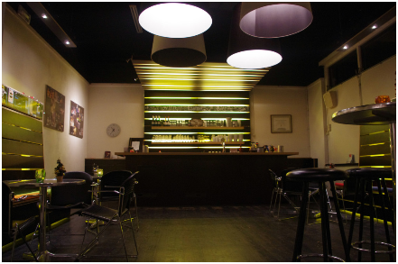

Theater Imperium is een klein vlakkevloer theater in het hart van Leiden. Wij bieden een intieme theaterzaal met 80 zitplaatsen, een ruime kleedkamer en een gezellige foyer met bediening. De bar is open van anderhalf uur voor tot minimaal anderhalf uur na de voorstelling; gezellig om voor te beschouwen en na te praten.
Toneelgroep Imperium brengt vier producties per jaar, in oktober, december, februari en mei. Ze duren, op- en afbouw meegerekend, vijf weken per productie. De rest van het jaar verhuurt Imperium het theater aan andere toneel-, dans- en muziekgroepen. Ook voor Open Podia en discussiegroepen is het een geschikte ruimte.
Een kleine fotoimpressie van het theater vind je hier.
Er is een professionele licht- en geluidsinstallatie aanwezig. Leden van onze techniekgroep helpen huurders bij het opbouwen en instellen van de apparatuur. Op de speelavonden dienen huurders zelf voor de techniek te zorgen. Hier staat een exacte beschrijving van onze technische voorzieningen. Voor informatie over huurprijs en beschikbaarheid mail je naar mw. Riekje Renes.